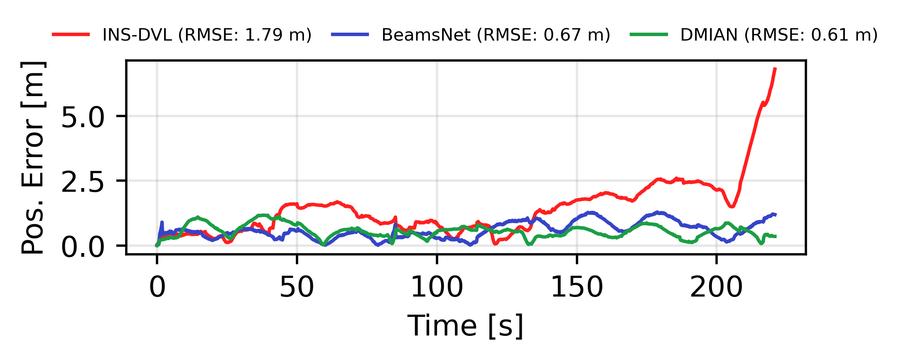
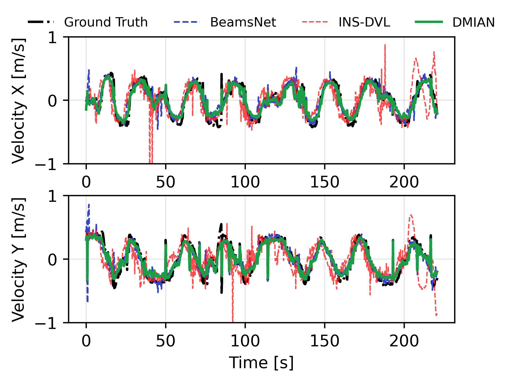
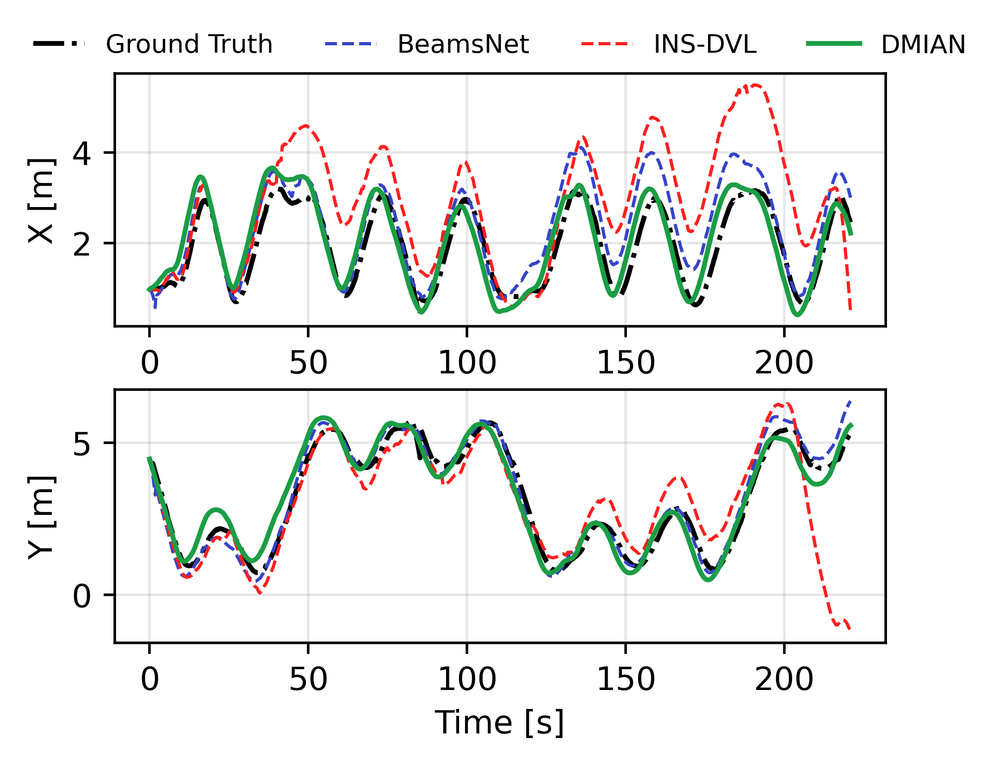

Results
Comparison of DMIAN against BeamsNet and classical INS-DVL across five evaluation trajectories.

2D trajectory comparison across all five evaluation trajectories. Rows: INS-DVL (top), BeamsNet (middle), DMIAN (bottom).
Table 1 — Average Position Performance
| Metric | BeamsNet | INS-DVL | DMIAN |
|---|---|---|---|
| MAE (m) | 0.82632 | 1.20609 | 0.73442 |
| MSE (m²) | 0.87767 | 2.52672 | 0.74459 |
| RMSE (m) | 0.91023 | 1.50836 | 0.80424 |
Table 2 — Average Velocity Performance
| Metric | BeamsNet | INS-DVL | DMIAN |
|---|---|---|---|
| MAE (m/s) | 0.11640 | 0.18817 | 0.09710 |
| MSE (m²/s²) | 0.02389 | 0.06481 | 0.01252 |
| RMSE (m/s) | 0.15368 | 0.24539 | 0.11137 |
| R² | 0.75694 | 0.29777 | 0.87802 |

Position error over time — Trajectory 4.

Velocity estimates — Trajectory 4.

Position estimates — Trajectory 4.